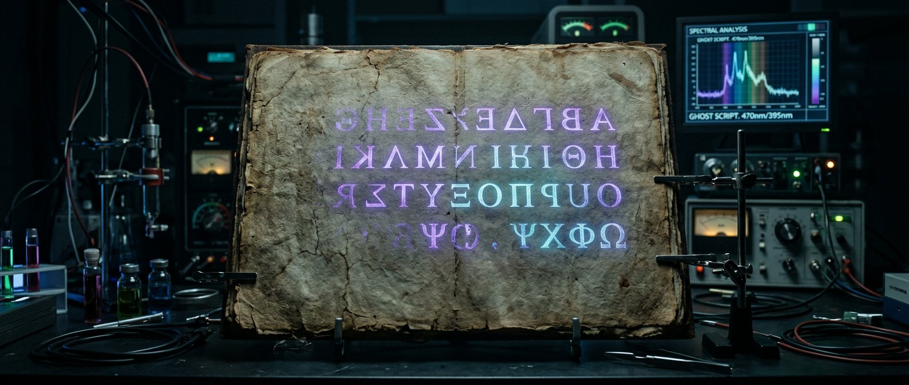
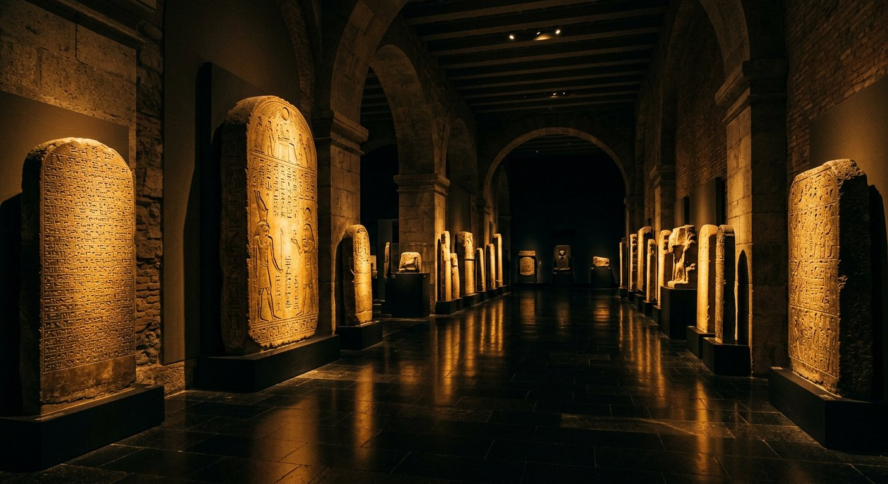
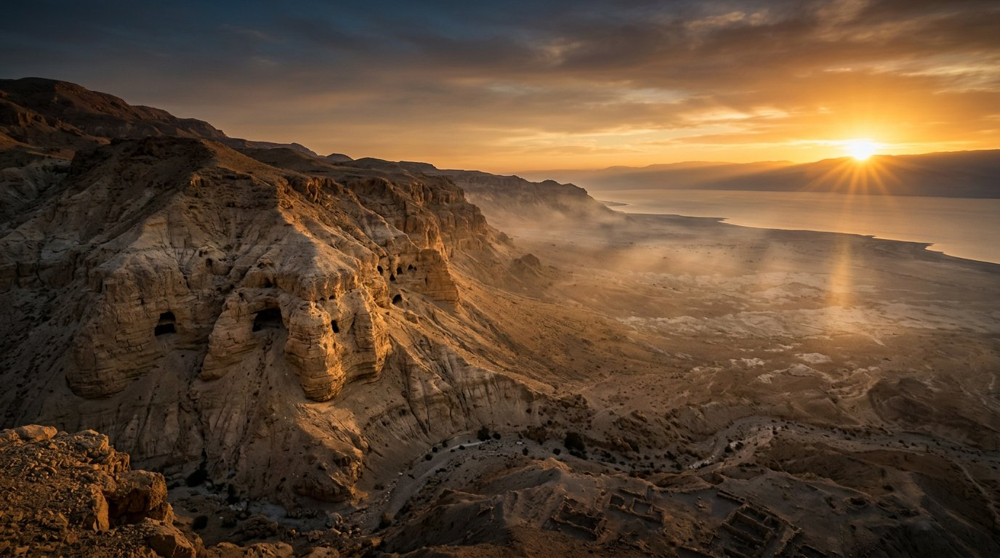

Règle n° 1
Le tétragramme : « Jéhovah »
Partout où le texte hébreu porte le nom divin יהוה (YHWH), la traduction française emploie systématiquement Jéhovah — jamais « Seigneur », jamais « LORD ».
Un musée qui affirme la fiabilité d'un texte doit d'abord afficher ses propres preuves. Voici nos sources, nos conventions, et nos limites assumées.
Partout où le texte hébreu porte le nom divin יהוה (YHWH), la traduction française emploie systématiquement Jéhovah — jamais « Seigneur », jamais « LORD ».
Chaque document porte son badge : Canonique ou Apocryphe. Les cas doubles (Hénoch en Éthiopie) affichent les deux statuts.
Hébreu et grec sont présentés dans leur écriture originale, mais jamais seuls : traduction intégrale pour les textes courts, résumé détaillé pour les textes longs.
Datations controversées : les deux thèses sont exposées (P64 Matthieu : 40-60 selon Thiede, 150-200 selon le consensus). Parallèles non consensuels : signalés comme hypothèse (papyrus Ipuwer). Jamais de raccourci.
Découverte spectaculaire d'avril 2026 : 42 pages ressuscitées, mais PAS de textes inédits. La prouesse est méthodologique — et le musée le dit explicitement.
La fiabilité de la Bible se démontre par les documents : stèles, papyrus, codices, éditions critiques. Ce musée n'argumente pas par la foi — il expose la transmission, et il laisse les documents parler.

Annonce officielle de l'Université de Glasgow (24 avril 2026) : équipe du professeur Garrick Allen, imagerie multispectrale EMEL, datation au carbone 14 (Sorbonne), édition libre codexh.arts.gla.ac.uk. Corroborations de presse scientifique et grand public : SciencePost, La Croix, Sciences et Vie, The Debrief, Archaeology Wiki. Faits vérifiés : 42 pages, Grande Laure du Mont Athos, fragments en Italie, Grèce, Russie, Ukraine, France, appareil eutalien — pas de textes inédits.
BnF — Passerelles (invention de l'imprimerie, Bible à 42 lignes : 180 exemplaires, 48 survivants, numérisation BnF 2017) ; Larousse (biographie de Gutenberg, procès Fust, Psautier de Mayence 1457) ; recherches universitaires sur la Septante et la Lettre d'Aristée, les Hexaples d'Origène et la Vulgate de Jérôme (recherches en histoire des textes, revue Pardes notamment) ; éditions critiques : Biblia Hebraica Stuttgartensia et Quinta.

Chaque artefact cité est conservé et consultable : musée de Louxor (stèle de Merneptah), musée du Louvre (stèle de Mésha), musée d'Israël (stèle de Tel Dan, codex d'Alep, inscription de Pilate, bulles de l'Ophel), British Museum (cylindre de Cyrus), British Library (Sinaïticus, Alexandrinus), bibliothèque vaticane (Vaticanus), Rylands Library de Manchester (P52), bibliothèque de l'Université de Cambridge (papyrus Nash), musée de Leyde (papyrus Ipuwer), musée de la Bible de Washington pour les photographies de référence. Les reconstitutions visuelles sont signalées comme telles dans les légendes.

Publications de la Leon Levy Dead Sea Scrolls Digital Library (IAA), travaux de Emmanuel Tov (édition critique des manuscrits), redatation de Qumrân présentée en 2025 (programme Groningue « The Hands That Wrote the Bible », analyse par IA) — intégrée avec prudence et signalée comme débat en cours. Manuscrits grecs : INTF Münster (éditions du Nouveau Testament grec), catalogue des Papyri Bodmer (P66, Bibliothèque de Genève).